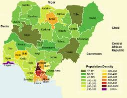

ABOUT ME
I am Annalucia. I was born in Nigeria. I am currently a student of BYU studying Software development. My goal is to be successful and build a good relationship with God and the people around me. I love to learn new things and spend time understanding concepts.

Nigeria, an African Country on the Gulf of Guinea, which got her independence in 1960 and became a Republic in 1963. Nigeria runs a bicameral system of government and has 36 states and Federal Capital Territory. All the states are endowed with natural resources.